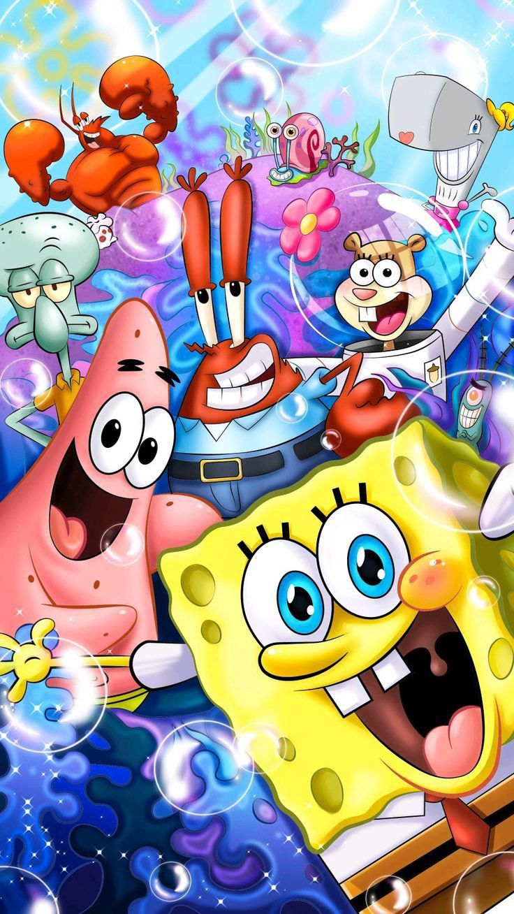

Desde su debut en 1999, la serie animada "Bob Esponja" (SpongeBob SquarePants) se ha convertido en uno de los programas más queridos y exitosos de Nickelodeon. Creada por Stephen Hillenburg, esta serie submarina nos transporta al colorido mundo de Fondo de Bikini, donde vive una esponja amarilla optimista junto a sus peculiares amigos y vecinos. Conozcamos a los personajes principales que han hecho de esta serie un fenómeno mundial

BOB ESPONJA PANTALONES CUADRADOS
El protagonista de la serie es una esponja marina antropomórfica de color amarillo que vive en una piña bajo el mar.
Bob Esponja es conocido por su personalidad extremadamente optimista, entusiasta y algo ingenua. Trabaja como cocinero de hamburguesas en el restaurante "El Crustáceo Cascarudo"
y tiene una pasión desmedida por su trabajo, especialmente por preparar las famosas Cangreburgers.
Su característica más notable es su actitud positiva ante la vida, sin importar las circunstancias.
Bob Esponja es leal, generoso y siempre está dispuesto a ayudar a sus amigos, aunque a veces su entusiasmo excesivo puede resultar molesto para otros.
Vive con su mascota Gary, un caracol que maúlla como gato, y su mayor sueño es obtener su licencia de conducir, algo que ha intentado innumerables veces sin éxito.
PATRICIO ESTRELLA
El mejor amigo de Bob Esponja es Patricio, una estrella de mar rosada que vive debajo de una roca.
Patricio representa el contraste perfecto con Bob Esponja: mientras este último es hiperactivo y trabajador, Patricio es perezoso, despreocupado y, frecuentemente, no muy inteligente.
Sin embargo, esta aparente simplicidad mental a veces le permite tener momentos de sabiduría inesperada.
Patricio pasa la mayor parte de su tiempo durmiendo, viendo televisión o acompañando a Bob Esponja en sus aventuras.
A pesar de su pereza, es un amigo leal que siempre está disponible cuando Bob Esponja lo necesita.
Su personalidad relajada y su enfoque despreocupado de la vida lo convierten en el compañero perfecto para las travesuras submarinas.
AMIGUES
CALAMARDO TENTÁCULOS
Calamardo es el vecino gruñón de Bob Esponja, un pulpo que vive en una casa con forma de cabeza de la Isla de Pascua.
Trabaja como cajero en El Crustáceo Cascarudo, un trabajo que detesta profundamente. Calamardo se considera a sí mismo un artista sofisticado y culto, con aspiraciones de ser músico de clarinete y artista, aunque sus habilidades en ambas áreas son cuestionables.
Su personalidad sarcástica y pesimista contrasta fuertemente con el optimismo de Bob Esponja, quien constantemente interrumpe su búsqueda de paz y tranquilidad.
A pesar de su actitud aparentemente hostil hacia Bob Esponja, en el fondo aprecia su amistad, aunque raramente lo admita.
Calamardo representa el adulto cínico que todos llevamos dentro, haciendo que muchos espectadores se identifiquen con él.